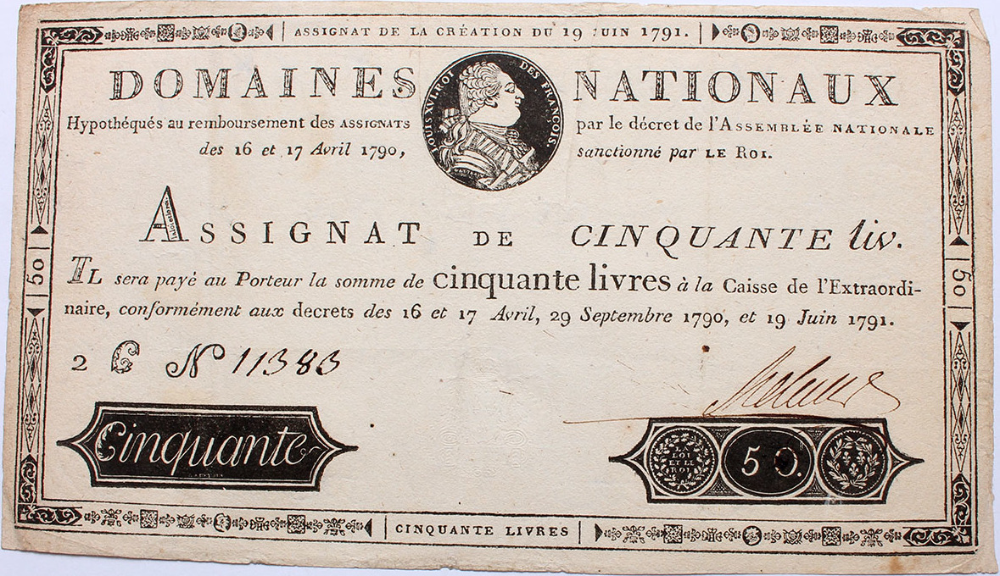
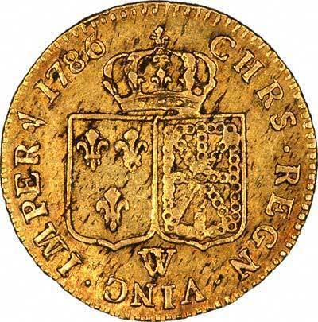
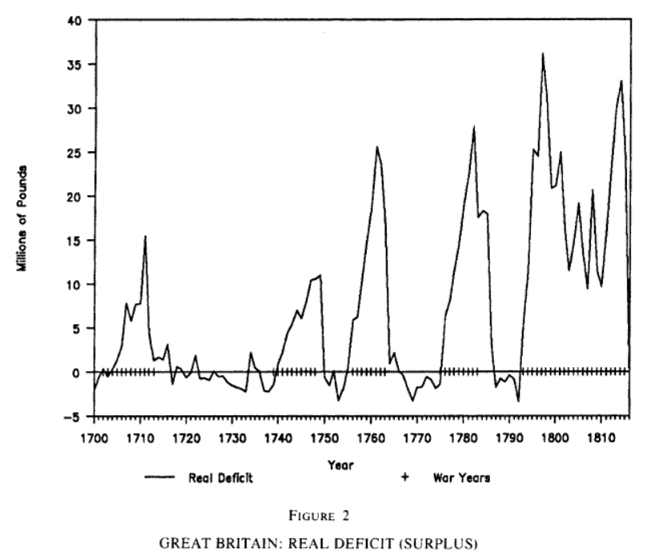
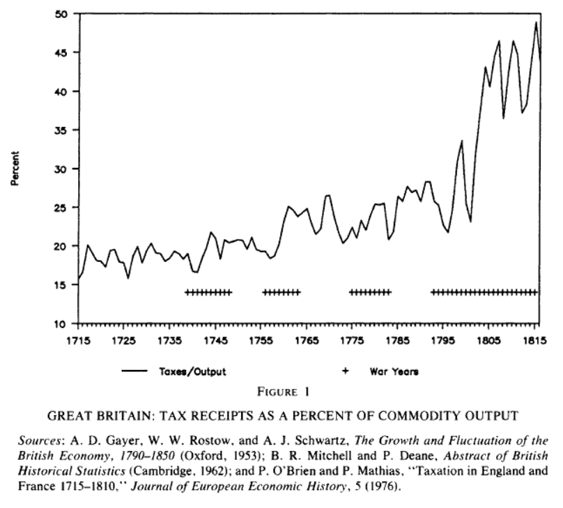
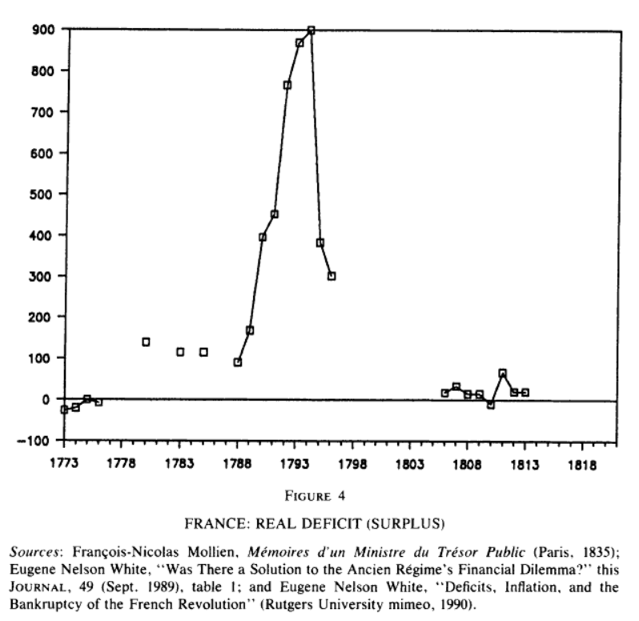

파운드와 프랑 - 신용과 귀금속의 경쟁
게시: 2022-02-28T06:30:06+09:00
앞서 보셨다시피, 전쟁에 필요한 3대 자원 중 사람과 장비는 사실 나폴레옹이 뭔가 극적이고 기발한 묘책을 내놓아야 해결할 수 있는 것들이 아니었고, 그냥 프랑스의 웅후한 역량을 믿고 활용하면 되는 것이었습니다. 어떻게 보면 나폴레옹이 프랑스를 만들었다기 보다는 프랑스가 나폴레옹을 만들었다고 할 수 있지요. 그러나 3대 자원 중 가장 추상적이면서도 가장 중요한 것, 바로 돈은 이야기가 달랐습니다. 여기엔 분명히 누군가의 결정이 필요했고, 그 결정을 내릴 사람은 나폴레옹 밖에 없었습니다. 기억들 하시겠습니다만, 1798년 프랑스 대혁명이 나고 제1차 대불동맹전쟁이 벌어지면서 프랑스 혁명정부도 당장 돈이 엄청나게 많이 필요했습니다. 프랑스 혁명정부도 처음에는 합리적이고 나름 기발한 방법으로 돈 문제를 해결했습니다. 당시엔 은행이 가진 금이나 은 같은 귀금속, 즉 정금(specie)을 기초자산으로 하여 지폐를 찍어내는 것이 허용되었는데, 당장 가진 귀금속이 없었으므로 귀족과 교회로부터 빼앗은 토지를 기초자산으로 하여 지폐를 찍어냈습니다. 이것이 바로 아시냐(Assignat) 지폐였습니다. 당시 그런 압류 토지는 최소 20억 리브르의 가치가 있다고 평가되었는데도 아시냐 지폐를 처음 찍어낼 때만 해도 12억 리브르 이상의 지폐는 찍지 않기로 하는 등 혁명정부는 상당히 이성적인 통화 정책을 가지고 있었습니다.

(1790년 프랑스 국민공회가 발행한 50 리브르 짜리 아시냐 지폐입니다. 저기에 인쇄된 통통한 아저씨는 바로 루이 16세입니다. 혁명정부가 발행한 지폐에 왕의 얼굴이 인쇄되어 있는 것이 이상하게 느껴질 수도 있습니다만, 저때만 해도 루이 16세는 버젓이 살아있었고 아직 프랑스 혁명이 입헌군주제로 이어질지 공화국으로 이어질지 결정이 안 난 상태였습니다.)
문제는 전쟁이 이성적이지 않았다는 것입니다. 15만 수준이던 병력을 순식간에 75만으로 끌어올려야 했던 혁명정부에게는 각종 청구서가 빗발치듯 날아들었습니다. '지금은 비상 상황이니까' 라든가 '곧 상황이 좋아질테니 그때까지만 임시로'라는 핑계로 지폐 윤전기를 돌리다보니 1793년 1월에는 이미 30억 리브르의 아시냐 지폐가 유통되고 있었습니다. 당연히 프랑스에는 하이퍼 인플레가 진행 중이었고, 1793년 2월 파리 시내에서는 빵과 의복 등 온갖 상점에서 약탈이 벌어지고 대혼란이 발생했습니다. 그러나 이미 수습이 불가능한 상황이었습니다. 1795년 7월 경에는 통화량이 44억 리브르로 늘어났고, 원래 25프랑의 가치를 가지던 루이 금화 (Louis d'Or)의 가치는 지폐 7천2백 프랑으로 폭등했습니다. 여기에 프랑스 내부의 혼란을 부추기고자 적국들이 적극적으로 위조지폐를 찍어서 프랑스 국내에 뿌려댔습니다. 결국 1797년에는 210억 리브르의 지폐가 유통되었습니다. 거기에 정부에 발행했던 국채까지 통화로 본다면 통화량은 700억 리브르에 달했습니다.
귀족 등 특권층에 대한 증오심이나 외국군의 침공으로 촉발된 애국심 등은 프랑스 혁명을 이끈 강력한 국민적 동기였습니다만, 당장 먹을 빵을 구할 수 없게 되면 그 어떠한 것도 오래 갈 수 없는 법입니다. 프랑스 혁명이 위기에 빠진 것은 로베스피에르의 공포정치나 오스트리아군의 강력함 때문이 아니라 바로 혁명정부가 자초한 경제 위기 때문이었습니다. 나폴레옹이 권력을 잡은 것도 꼭 1799년 11월의 브뤼메르 쿠데타에 성공했기 때문만은 아니었습니다. 그가 1800년 1월 18일 영란은행을 본뜬 프랑스 중앙은행 (Banque de France)을 설립함으로써 통화 문제와 경제 혼란을 잠재운 것이 그의 통치를 프랑스 국민이 받아들인 가장 큰 원인 중 하나였습니다. 이처럼 돈 문제는 경제적인 측면 뿐만 아니라 군사적으로도 매우 중요한 일이었습니다. 지난 편에서 언급했던 것처럼, 1796년 이탈리아 방면군 사령관으로 부임한 나폴레옹이 당면한 문제는 적을 격파하는 것이 아니라. 누더기를 입은 병사들에게 제복과 군화를 마련해주고, 밀린 급여를 지불하는 것이었습니다. 대략 3만5천에 달했던 이탈리아 방면군의 문제를 해결하기 위해서 나폴레옹은 파리의 총재정부에 군자금으로 60만 리브르를 요청했지만 그가 부임할 때 주어진 것은 달랑 2천 루이(Louis d'Or)의 금화, 현재 가치로 대략 10억원 정도 밖에 없었습니다.

(1786년에 주조된 진짜 루이 16세의 Louis d'Or 금화입니다. 나폴레옹은 바로 이 금화 2천개가 든 가방을 들고 이탈리아 방면군에 부임했지요. 당시의 루이 금화에는 금이 약 7.01g 정도 들어 있었으므로, 2천 루이라면 금 1g = 7만원으로 잡으면 대략 10억원 정도입니다.) 당시 나폴레옹은 금전 문제를 해결하기 위해 타고난 그의 쇼우맨쉽과 가혹한 현지조달 및 징발을 활용했습니다. 그는 가진 돈은 없었으나 불만이 가득한 병사들에게 자주 연설을 하여 '북부 이탈리아를 정복하기만 하면 밀린 급여는 물론 온갖 재물이 너희 것이 된다'라는 식으로 선동했고, 실제로 정복하는 곳마다 군수 물자와 함께 현금, 귀금속, 그리고 돈이 될 만한 그림과 조각품까지 그야말로 싹쓸이를 자행했습니다. 그가 백전백승의 명성을 쌓을 수 있었던 것은 단지 전투를 잘 수행했기 때문이 아니라 전쟁을 수행하는데 끊임없이 들어가는 돈 문제를 잘 해결했기 때문이었습니다. 나폴레옹 몰락의 시초를 러시아 원정이 아니라 스페인 원정으로 보는 역사가들이 많은데, 그 주된 이유 중 하나가 바로 그런 돈 문제였습니다. 나폴레옹은 제1차 대불동맹전쟁부터 제4차 대불동맹전쟁까지 모든 전쟁에서 승리를 거두었고, 상대가 오스트리아건 프로이센이건 결국 막대한 배상금을 받아내어 돈 문제를 해결했습니다. 오스트리아는 1805년 아우스테를리츠 패전 뒤에 7천5백만 프랑을 배상했고, 1809년 바그람 패전 뒤에는 다시 1억6천4백만 프랑을 배상했습니다. 프로이센은 그야말로 호구 노릇을 담당하여 예나-아우어슈테트의 패전 이후 1806년부터 1812년 기간 동안 무려 5억 프랑을 배상했습니다. 그러나 스페인 부르봉 왕가가 거의 스스로 붕괴된 이후에도 각 지방의 훈타(junta)들이 독자적으로 저항을 계속했던 스페인에서는 평화 협정을 맺을 수가 없었고 따라서 배상금을 받아낼 수가 없었습니다. 나폴레옹이 적으로부터 배상금을 받아내지 못한 첫번째 전쟁이 바로 이 스페인 원정이었고, 그로 인해 나폴레옹은 곤경에 처하기 시작했던 것입니다. 나폴레옹의 숙적이던 영국은 피는 그다지 많이 흘리지 않았지만, 돈은 나폴레옹보다 훨씬 더 많이 뿌려댔습니다. 영국은 대체 어떻게 전비를 충당했을까요? 요약하면 영국의 국채 신용도가 프랑스보다 훨씬 높아서 영국은 증세 대신 국채 발행을 통해 전쟁 비용을 댈 수 있었습니다. 프랑스도 혁명 전에는 영국처럼 증세 대신 국채 발행을 통해 전쟁 비용을 충당했습니다. 그러나 혁명 이전 프랑스의 부르봉 왕정이 귀족들과 교회의 재산에 대해서는 세금을 걷지 않으면서도 흥청망청 써댄 덕분에 프랑스 정부의 신용은 바닥을 기었고, 그나마 프랑스 혁명이 일어나면서 프랑스 국채는 그야말로 정크 본드 취급을 받았습니다. 실제로 프랑스 혁명 정부는 일부 국채를 무효화시키기도 하여 그런 시장의 평가가 정당하다는 것을 입증하기도 했고요.

(18세기~19세기 초반의 영국의 재정적자입니다. 스페인 왕위 계승 전쟁, 미국 독립전쟁 등을 치룰 때마다 큰 적자를 보긴 했으나 평화시기에는 재정흑자를 기록했습니다. 그러나 1792년 제1차 대불동맹전쟁에 참전하면서 시작된 나폴레옹 전쟁은 20년이 지나도록 끝날 줄을 몰랐고, 전쟁 비용도 이전 전쟁과는 차원을 달리할 정도로 크게 불어났습니다.)
정부의 신용도는 곧 비용으로 이어졌습니다. 영국은 국채 발행이 상대적으로 더 쉬웠고, 금리도 더 낮게 책정할 수 있었습니다. 뿐만 아니라, 의도적 또는 필연적인 인플레를 통해 전쟁 비용 부담을 줄일 수 있었습니다. 10년 만기의 100만 파운드 어치의 국채를 발행했는데 연 5%의 인플레가 이어진다면, 10년 후 100만 파운드의 가치는 그만큼 떨어져 있을테니 빚을 갚아야 하는 정부의 부담이 훨씬 줄어드는 셈이었지요. 다만 그렇게 하기 위헤서는 당시 유럽 대부분의 국가들이 실질적으로 채택하고 있던 금본위제를 폐지해야 했는데, 실제로 영국은 위기 상황이던 1797년 초 프랑스 혁명분자들에게 패배할 지경이라는 명분을 내세워 금태환 제도를 일시 정지시켰습니다. 하지만 영국 정부가 국민들을 상대로 사기를 치려고만 했던 것은 아니었습니다. 영국 정부는 그런 국가 부채 관리를 위해 기존의 재산세도 증액하고 특히 1799년 소득세를 세계 최초로 도입했습니다. 여태까지 유럽에서 세금이란 소득이 아니라 토지와 주택, 상품 등 재산에 대해 부과되는 것이었거든요. 이런 신설 세금 덕분에 영국은 1814년 즈음에는 세입이 20% 정도 늘어났고, 덕분에 예전 전쟁과는 달리 영국의 전비 충당에서 세금이 차지하는 비중이 30%까지 늘어나기도 했습니다.

(당시 영국의 가치생산액(Commodity output) 대비 국가 세수의 비율입니다. 가치생산액이란 국가의 농업, 광업, 제조업, 건설 등의 실제 생산에 의해 창출된 가치의 합입니다. 서비스 산업이 포함되지 않았으므로 현대적인 GDP와는 다른 개념입니다. 위 그래프에서 보시다시피, 영국이 세금에 의존하지 않고 국채 발행을 통해 전쟁 비용을 충당했다고 해서 세금 부담이 전혀 늘지 않은 것은 아니었습니다. 나중에 보시겠습니다만 프랑스의 국가 세수 비율을 오히려 더 낮았습니다. 이는 프랑스가 패전국들과 위성국가들로부터 엄청난 배상금을 뜯어냈기 때문에 가능한 일이었지요.)
영국의 인플레를 통한 국채 부담 경감 전략이 비교적 잘 통제되면서 운용될 수 있었던 것은 결국 정치체제의 우월성 때문이었습니다. 영국에서는 국채를 매입하는 자산가들의 이익을 대변하는 의회가 강력한 권한을 가졌던 것이지요. 영국 의회는 얼마만큼의 국채를 발행할 것인지, 그리고 그렇게 해서 모은 돈을 어디에 얼마만큼 쓸 것인지에 대해서 강력한 감시와 통제를 했습니다. 그러나 프랑스는 이야기가 달랐습니다. 나폴레옹 제국 하에서는 의회는 그야말로 허수아비 거수기 노릇을 했을 뿐 국채 발행이나 회계에 대한 감시를 할 권한이 없었으므로 정부가 채권자들을 얼마든지 속이는 것이 가능했고, 따라서 그런 정부가 발행하는 국채에 대한 신뢰도는 크게 떨어졌습니다. 신뢰도가 낮은 채권은 높은 금리를 약속하지 않으면 팔리지 않았습니다. 거기에다 나폴레옹 본인도 부르봉 왕가가 결국 전쟁 비용을 충당하기 위해 남발한 국채를 제대로 처리하지 못해 망했다는 것을 잘 알고 있었으므로, 여태까지의 전쟁에서 국채 발행보다는 세금과 패전국의 배상금을 통해 전비를 충당했습니다. 세금 측면에서 있어서는, 나폴레옹은 직접세인 재산세를 늘리고 혁명기간 중 없앴던 와인과 담배 등에 부과되는 소비세를 신설하여 세수를 확충했습니다. 이렇게 프랑스의 화폐 정책은 금과 은을 기초자산으로 하는 금은양본위제(Bimetallic Standard, Bimetallism)를 유지했고, 덕분에 상대적으로 인플레가 더 낮았습니다.

(18세기 후반~19세기 초반 프랑스의 재정적자 상황입니다. 혁명 직후 말이 안되는 수준으로 치솟았던 적자를 승전과 프랑스 중앙은행 설립으로 해결했던 것이 나폴레옹이 황제에 등극할 수 있었던 이유였습니다. 그렇게 많은 전쟁을 치르면서도 재정적자를 저렇게 안정적으로 유지하는 것은 정말 쉽지 않은 일입니다.)
나폴레옹이 총재정부의 재정 난맥상을 해결하기 위해 세웠던 프랑스 중앙은행은 아무런 역할을 하지 않았을까요? 물론 했습니다. 그러나 영국에 비하면 그 비중은 낮았고, 금융 위기로 인해 정부 부채가 급증하여 8천만 프랑에 달했던 1805년에도 그 금액은 전체 정부 지출의 10%에 불과했습니다. 영국과 프랑스의 이런 상반된 전쟁 비용 정책 중 어느 쪽이 더 우수한 것일까요? 1811년까지만 해도 나폴레옹의 재정 정책이 승리하는 듯 보였습니다. 국가 부채에 시달리던 영국의 파운드화가 액면가를 상당히 할인해서 평가될 때 프랑스 중앙은행이 발권한 지폐는 액면가로 통용되었으며 정부 세입세출도 균형이 맞았습니다.
그러나 러시아 원정 실패로 프랑스 재정 정책의 모든 것이 나락으로 떨어졌습니다. 러시아 원정에 들어간 막대한 비용을 받아낼 방법이 없어진 것은 물론, 이제 1813년 1월에는 새롭게 20~30만의 군대를 새로 무장시키고 먹이고 입히고 급여를 줘야 했으니까요. 대체 얼마만큼의 돈이 필요했을까요?
Source : The Life of Napoleon Bonaparte, by William Milligan Sloane The French Revolution and the Politics of Government Finance, 1770-1815 by Eugene Nelson White A Tale of Two Currencies: British and French Finance During the Napoleonic Wars by Michael D. Bordo and Eugene N. White
https://journals.sagepub.com/doi/full/10.1177/0968344513483071 https://en.wikipedia.org/wiki/War_of_the_First_Coalition https://ericmackattacks.com/cinema/movie-reviews/mcu/captain-america-the-first-avenger/ https://www.investopedia.com/terms/w/warbonds.asp https://www.investopedia.com/terms/b/series-e-bond.asp https://en.wikipedia.org/wiki/War_bond https://movieposters.ha.com/itm/movie-posters/war/world-war-ii-propaganda-us-government-printing-office-1944-war-bond-poster-2975-x-3825-you-can-t-afford-to-mis/a/161706-51443.s